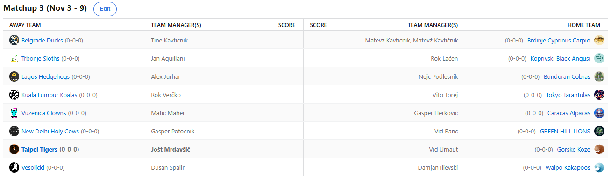

SEZONA 25/26
- Pravila in sistem tekmovanja
- Matchup1 (Oct 21 - Oct 26)
- Matchup2 (Oct 27 - Nov 2)
- Matchup3 (Nov 3 - Nov 9)
- Matchup4 (Nov 10 - Nov 16)
- Matchup5 (Nov 17 - Nov 23)
- Matchup6 (Nov 24 - Nov 30)
- Matchup7 (Dec 1 - Dec 7)
- Matchup8 (Dec 8 - Dec 14)
- Matchup9 (Dec 15 - Dec 21)
- Matchup10 (Dec 22 - Jan 28)
- Matchup11 (Dec 29 - Jan 4)
- Matchup12 (Jan 5 - Jan 11)
- Matchup13 (Jan 12 - Jan 18)
- Matchup14 (Jan 19 - Jan 25)
- Matchup15 (Jan 26 - Feb 1)
- Play-in (Feb 2 - Feb 22)
- Playoff 1 (Feb 23 - Mar 8)
- Playoff 2 (Mar 9 - Mar 22)
- Playoff 3 (Mar 23 - Apr 5)
2025/26 - Fantasy Koroška - sezona 9
MATCHUP 3 (Nov 3 - Nov 9)
Recap: MATCHUP 3
V tretjem tednu sta bili možnosti praktično samo 2: ogromen blowout, ali pa napeta bitka za vsako točko in grizenje nohtov.
Po pričakovanju se je FA market nekoliko umiril, fikiki se je začel šparati in posledično »zgolj« 228 potrošenih dolarčkov ta teden.
Začnimo kar na najbolj zanimivem obračunu – Herkonov kriptonit, Maher, ki je sicer daleč od tega da bi blestel kar se skupnega izkupička zmag in porazov tiče,
je ponovno dokazal, zakaj je trn v peti našemu Gašperju. Neupoštevajoč sophomorje, je zdaj prav on Maherjeva najljubša stranka,
premagal ga je namreč že petič! S tem je Herko postal prvi nubac, ki ga je Maher premagal 5x … imagine lmfao …
Po nekaterih neuradnih podatkih ljudi, ki se ponoči zbujajo za fantasy, je Gašper v zadnjo četrtino zadnje tekme nesel nekaj točk prednosti,
a je v blowoutu igral le še Gobert … in francoski antič je zmago prinesel Klovnom. Ne moremo si zamisliti dosti slabših in bolj živceparajočih
scenarijev za poraz.
Drugi in hkrati zadnji napet obračun je bil prav tako odločen v zadnji tekmi tedna – McDaniels, ki je bil celo prvi scorer Zelenobreških Levov,
je z 2 blokadama in 12 točkami v drugem polčasu prinesel ravno dovolj točk za sladko zmago s prav toliko razlike.
Ranko je s tem osvojil tudi dodaten procent za boljši izbor na draftu prihodnje leto in je po 3 krogih še vedno neporažen!
Če je lani bil 1-week wonder, pa je zdaj formo uspel vzdrževati že vsaj 3 tedne in napredek je več kot očiten.
Kdo bo krotilec Levov, morda lanski prvak Verčki?
Semi-zanimiv dvoboj smo spremljali v veteranskem obračunu med Dilijem in Duletom. Uspešnejši je bil prvi, ki je na krilih Donovana Mitchlla prišel do prve
zmage v letošnji sezoni. S tem je že izboljšal lanski začetek, ko je na prvo zmago čakal 4 kola. Nimamo sicer uradnega podatka,
a skoraj prepričani smo, da v normalno dolgih matchupih še ni bilo primera, da niti en igralec moštva ne bi presegel 100 točk,
kot je bil tokrat primer pri Vesoljčkih. Zaskrbljujoče, ali pa tudi ne, saj je bil Dušan kljub temu v igri prav do konca, a žal
mu njegovi varovanci niso uspeli priskrbeti darilca, mu ga bodo pa morda dali nekoliko zakasnelo, ko se sprehodijo čez Tigerse :D
Recimo, da je bilo zanimivo tudi na Brdinjah. Po tem, ko ga je outdraftal in premagal že v četrtek na rekreaciji, je Tinki Binki svojega starejšega brata naučil
kozjih molitvic tudi v Fantasyju. S kar 1415 točkami, s čimer si je trenutno priigral tudi najboljši score in virtualnih 10€,
je na koncu presenetljivo gladko odpravil Matteona in bo tako vsaj do naslednjega matchupa šerif v hiši. Nismo uspeli izvedeti,
ali sta fanta imela kakšno stavo v igri za dodatno motivacijo, bi pa bilo zanimivo izvedeti, ali bo morda Matevž kazensko na
kruhu in pašteti, med tem ko bo veliki zmagovalec Tine še naprej užival Petrino košto?
Blowout smo videli v obračunu Tigersov in Koz. Slednje so se dobesedno sprehodile do nove zmage in tryhard Urnaut, ki zdaj ko končno ve kje se nahaja FA market
je igralce podpisoval celo z Japonske, a smo kaj kmalu videli da popolnoma nepotrebno. Še naprej bolnišnica pri Tigrih in po
več kot treh letih se je Jole znašel izven deseterice. Grozno slabo in ne preseneča, da hripavi Jole ni bil dostopen za izjavo.
Je pa baje v soboto srečal Lužana, ki mu je znova zatrdil, da se klobase delajo na koncu in da ga naj nič ne skrbi. Bomo videli ali res.
Še večji blowout smo videli v Carigradu, kamor so na kebab prišli Shrimpi. Tudi prediction protestnik Aleks se sooča s hudimi zdravstvenimi težavami znotraj
moštva in pravzaprav od začetka ni imel nobenih možnosti za zmago. Na žalost smo bili zaradi visoke razlike prikrajšani
tudi za gobcanje med obema managerjema in le želimo si lahko ponovitve matchupa v kakšni playoff seriji.
Kako dolgo bo Aleks še prenašal popularno opcijo za »steal of the draft«, ki to zagotovo ne bo – Jaylena Wellsa?
Cicko na drugi strani še ne pozna poraza in glede na naslednjega nasprotnika, bo najbrž tako tudi ostalo XD Je to nov naskok na titulo?
Še večji blowout smo pričakovano videli tudi v dvoboju med Kupsom in Lačnom. Po novem rekreativni DJ Voky, je poleg nešteto skokov na medpodjetniškem turnirju z
obema rokama zgrabil tudi ponujeno priložnost za rutinirano zmago, prvo letos. Lahko Rok ujame pravo formo in poveže par zmag zapored,
ali pa je bila to zgolj naključna enotedenska sreča v razporedu? Vsekakor je Kups na drugi strani upravičeno začel veljati za kanonfutrčka,
uspel mu je namreč NAJSLABŠI štart v zgodovini lige. Kar -1067 je njegova razlika po treh krogih, s čimer je šele drugi, ki je pred
prvo zmago prišel do koš razlike jurčka ali več. Prej je to kakopak, uspelo Maherju, vendar v 4 tednih. To letvico bo krepko nižje
premaknil Kups najbrž tudi v tem tednu, ko bi potreboval pravi mali čudež, da bi lahko pariral trenutno vodilnemu moštvu lige – Tarantelam.
Prav slednji so nam še kot zadnji ostali – v največjem blowoutu tedna so s 553 točkami razlike odpihnili Koale, za katere v slovenščini ni besede z dovolj O-ji.
Izgubiti tako gladko je najbrž boleče, a vsekakor manj boleče kot gamewinner Tonija Drevenška haha.
Kakorkoli že, bit če bolje Rok, ker slabše skoraj da ne more biti. Kako dolgo se lahko Vito, ki je sploh prvič na vrhu lestvice,
lahko tam tudi obdrži?
Kaj sledi v četrtem tednu? Vsi trije neporaženi, bi najbrž utegnili to ostati tudi po tem krogu, z zanimanjem bomo pospremili obračun trenutno vročih Angusov in Račk.
Slednje v Martinovem tednu ponavadi blestijo, ali bo temu tako tudi tokrat? Sicer pa ta krog brez večjih derbijev,
ogromno poškodb v nekaterih moštvih pa bi utegnilo ponovno botrovati k velikemu številu blowoutov.
Ne pozabite na predictione in GL vsem 8)
Best memes